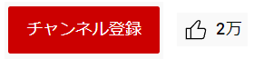

← 第?回 絵の正体 →
とりあえずキャッチーなタイトルを付けてみた。
絵とは何かから考えたい。
pendraが思うに絵とは光の反射である。
線画であれば白い紙の部分に光が反射して、
黒い線を認識する事ができる。
カラーの絵に関しても同じで、
色々な波長の光の反射を目のセンサが捉えて、
カラーの絵を認識する事ができる。
何を当たり前の事をと思うかも知れないが、
絵を見るとは物理現象であるという事を言いたい。
この反射する加減や反射の形を変えたり、
調整していい感じに見せるのが絵である。
---
ここで大事なのは、
光の反射は常に大体一直線上にあるということ。
もちろん色々な事象で光が歪む事もあるが、
絵を描くほとんどの場合無視できる。
我々はこの光の反射を見て、
それを模倣して紙の上に表現したりしている。
そして、この光の反射は、
全て物理的に再現可能であるとpendraは考えている。
世の中に描けないものなどない、
というのが持論である。
今後の講座では、
その為の方法論を解説したりしなかったりしていく。
まて次回
---
続きのご視聴を希望の方は、
チャンネル登録と高評価をお願いします。

(このサイトにそんな機能はありません。)